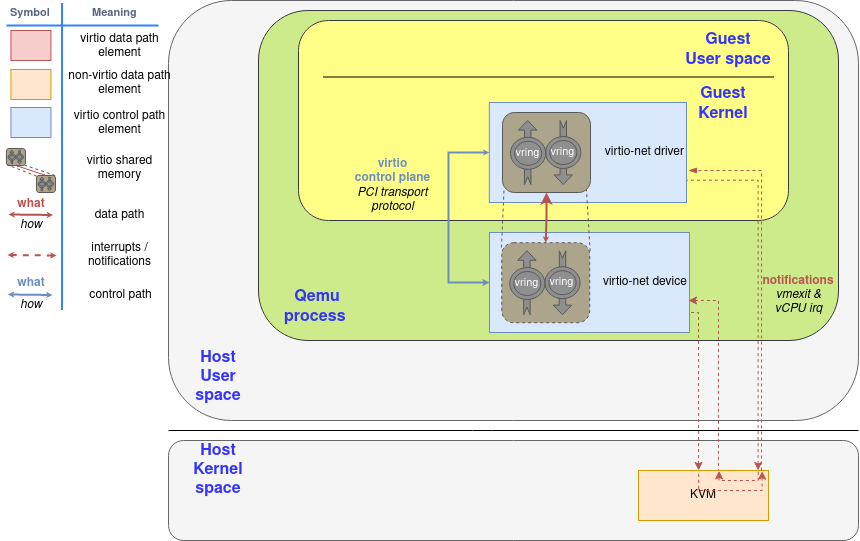
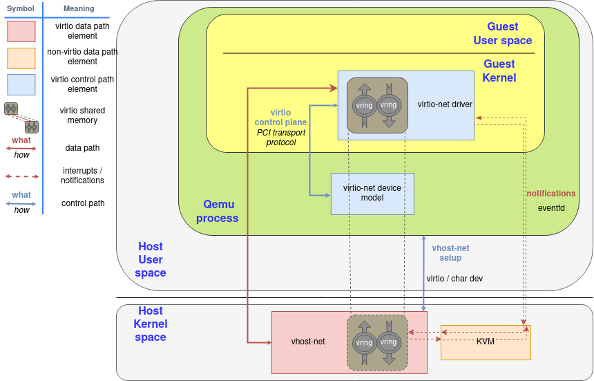
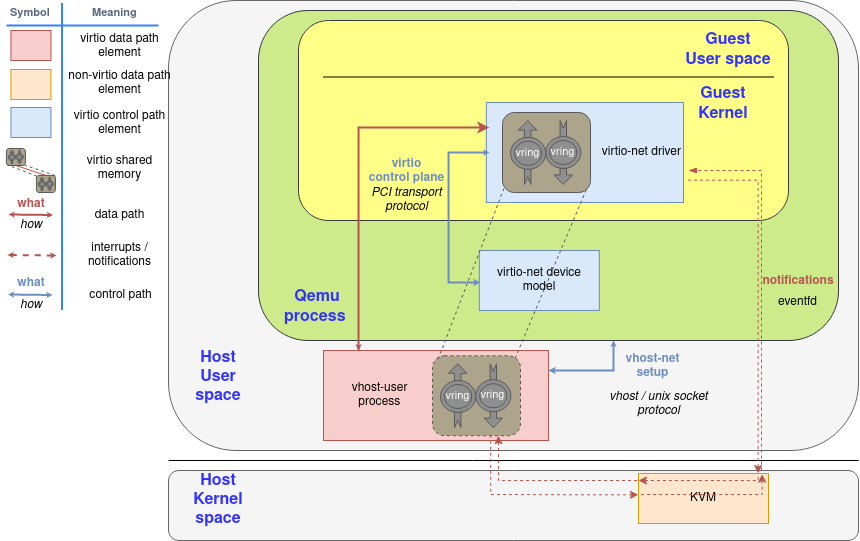
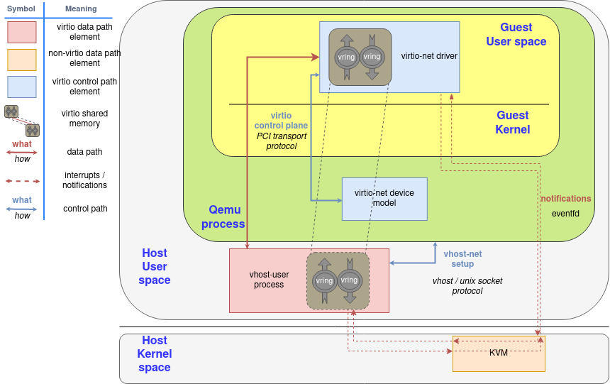
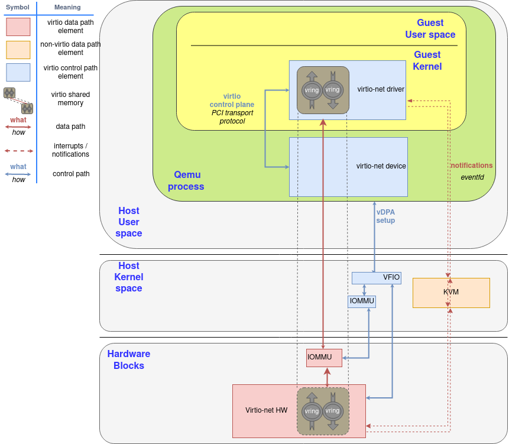

Virtio devices and drivers overview¶
Copy from https://www.redhat.com/en/blog/virtio-devices-and-drivers-overview-headjack-and-phone
This three-part series will take you through the main virtio data plane layouts: the split virtqueue and the packed virtqueue. This is the basis for the communication between hosts and virtual environments like guests or containers.
One of the challenges when coming to explain these approaches is the lack of documentation and the many terms involved. This set of posts attempts to demystify the virtio data plane and provide you with a clear down to earth explanation of what is what.
This is a technical deep dive and is relevant for those who are interested in the bits and bytes of things. It details the communication format between the different virtio parts and data plane protocols.
While further extensions, optimizations and features are being added to both virtqueue versions, to improve performance and to simplify implementation, the core of the virtqueue operations remains the same. This is because it has been designed with extensibility in mind.
Packed virtqueue, which complements the split virtqueue has been merged in the virtio 1.1 spec, and successfully implemented in both emulated devices (qemu, virtio_net, dpdk) and physical devices.
We’ll start with an overview of the virtio device, drivers and their data plane interaction. Then we’ll move on to explain the details of the split virtqueue ring layout. This is followed by an overview of the packed ring layout and the advantages it brings over the split virtqueue approach.
Virtio devices: In and out the virtual world¶
A virtio device is a device that exposes a virtio interface for the software to manage and exchange information. It can be exposed to the emulated environment using PCI, Memory Mapping I/O (Just to expose the device in a region of memory) and S/390 Channel I/O. Part of the communication needs to be delegated to theses, like device discovery.
Its main task is to convert the signal from the format they have outside of the virtual environment (the VM, the container, etc) to the format they need to be exchanged through the virtio dataplane and vice-versa. This signal could be real (for example the electricity or the light from a NIC) or already virtual (like the representation the host has from a network packet).
The virtio interface consist of the following mandatory parts (virtio1.1 spec ):
Device status field
Feature bits
Notifications
One or more virtqueues
Now we’ll provide additional details to each of these parts and how the device and driver starts communicating using these.
Device status field: Is everything ok?¶
The device status field is a sequence of bits the device and the driver use to perform their initialization. We can imagine it as traffic lights on a console, each part set and clear each bit indicating their status.
The guest or the driver set the bit ACKNOWLEDGE (0x1) in the device status field to indicate that it acknowledges the device, and the bit DRIVER (0x2) to indicate an initialization in progress. After that, it starts a feature negotiation using the feature bits (more on this later), and sets bit DRIVER_OK (0x4) and FEATURES_OK (0x8) to acknowledge the features, so communication can start. If the device wants to indicate a fatal failure, it can set bit DEVICE_NEEDS_RESET (0x40), and the driver can do the same with bit FAILED (0x80).
The device communicates the location of these bits using transport specific methods, like PCI scanning or knowing the address for MMIO.
Feature bits: Setting the communication agreement points¶
Device’s feature bits are used to communicate what features it supports, and to agree with the drivers about what of them will be used. These can be device-generic or device-specific. As an example of the first case, a bit can acknowledge if the device supports SR-IOV or what memory mode can be used. An example of the second case can be the different offloads it can perform, like checksumming or scatter-gather If the device is a network interface.
After the device initialization exposed in the previous section, the former reads the feature bits the device offers, and sends back the subset that it can handle. If they agree on them, the driver will allocate and inform about the virtqueues to the device, and all other configuration needed.
Notifications: You have work to do¶
Devices and drivers must notify that they have information to communicate using a notification. While the semantic of these is specified in the standard, the implementation of these are transport specific, like a PCI interruption or to write to a specific memory location. The device and the driver needs to expose at least one notification method. We will expand on this later in future sections.
One or more virtqueues: The communication vehicles¶
A virtqueue is just a queue of guest’s buffers that the host consumes, either reading them or writing to them, and returns to the guest. The current memory layout of a virtqueue implementation is a circular ring, so it is often called the virtring or vring.
They will be the main topic of the next section, Virtqueues and virtio ring, so at this moment is enough with that definition.
Virtio drivers: The software avatar¶
The virtio driver is the software part in the virtual environment that talks with the virtio device using the relevant parts of the virtio spec.
Generally speaking, its virtio control plane tasks are:
Look for the device
To allocate shared memory in the guest for the communication
Start it using the protocol in Virtio devices.
Devices and drivers interaction: The scenarios¶
In this section we are going to locate each virtio networking element (device, driver, and how the communication works) in three different architectures, to provide both a common frame to start explaining the virtio data plane and to show how adaptive it is. We have already presented these elements in past posts, so you can skip this section if you are a virtio-net series reader. On the other hand, if you have not read them, you can use them as a reference to understand this part better.
In Introduction to virtio-networking and vhost-net we showed the environment in which qemu created an emulated net device and offered it to the guest’s virtio-net driver. In this environment, the driver notifications are routed from whatever method is exposed to guests (usually, PCI) to KVM interruptions that stop the guest’s processor and return the control to the host (vmexit). Similarly, the device notifications are a special ioctl the host can send to the KVM device (vCPU IRQ). QEMU can access virtqueue information using the shared memory.
Please note the implications of the virtio rings shared memory concept: The memory the driver and the device access is the same page in RAM, they are not two different regions that follow a protocol to synchronize.
Since the notification now needs to travel from the guest (KVM), to QEMU, and then to the kernel for the latter to forward the network frame, we can spawn a thread in the kernel with access to the guest’s shared memory mapping and then let it handle the virtio dataplane.
In that context, QEMU initiates the device using the virtio dataplane, and then forwards the virtio device status to vhost-net, delegating the data plane to it. In this scenario, KVM will use an event file descriptor (eventfd) to communicate the device interruptions, and expose another one to receive CPU interruptions. The guest does not need to be aware of this change, it will operate as the previous scenario.
Also, in order to increase the performance, we created an in-kernel virtio-net device (called vhost-net) to offload the data plane directly to the kernel, where packet forwarding takes place:
Later on, we moved the virtio device from the kernel to an userspace process in the host (covered in the post A journey to the vhost-users realm ) that can run a packet forwarding framework like DPDK. The protocol to set all this up is called virtio-user.
It even allows guests to run virtio drivers in guest’s userland, instead of the kernel! In this case, virtio names driver the process that is managing the memory and the virtqueues, not the kernel code that runs in the guest.
Lastly, we can directly do a virtio device passthrough with the proper hardware. If the NIC supports the virtio data plane, we can expose it directly to the guest with proper hardware (IOMMU device, able to translate between the guest’s and device’s memory addresses) and software (for example, VFIO linux driver, that enables the host to directly give the control of a PCI device to the guest). The device uses the typical hardware signals for notifications infrastructure, like PCI and CPU interruptions (IRQ).
If a hardware NIC wants to go this way, the easiest approach is to build its driver on top of vDPA, also explained in earlier posts of this series.
We will explain what happens inside of the dataplane communication in the rest of the posts.
Thanks to the deep investment in standardization, the virtio data plane is the same in whatever way we use across these scenarios, and whatever transport protocol we use. The format of the exchanged messages are the same, and different devices or drivers can negotiate different capabilities or features based on its characteristics using the feature bits, previously mentioned. This way, the virtqueues only act as a common thin layer of device-driver communication that allows to reduce the investment of development and deployment.